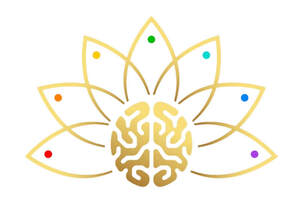

Trade Mark Journal No.2026/003 16 January 2026
UK00004299342 23 November 2025 (9,10,11,25,28,35,42,44,45)

- Class 9
- Downloadable computer software; downloadable mobile applications for meditation, mindfulness and wellbeing; downloadable virtual reality and augmented reality software; downloadable audio and video recordings in the field of meditation, mindfulness and wellbeing; downloadable digital publications; computer software using artificial intelligence for generating personalised meditation, relaxation and wellbeing programmes; computer software for monitoring and analysing biometric data; wearable computers; wearable digital electronic devices incorporating sensors for measuring biometric, neurological and physiological data; Virtual reality headsets; controllers for virtual reality experiences.
- Class 10
- Medical apparatus and instruments; therapeutic apparatus and instruments; biofeedback and neurofeedback apparatus; EEG and ECG monitors; apparatus for monitoring heart rate, respiration and physiological signals; wearable medical devices; haptic-feedback devices for therapeutic purposes; vibration massage devices; apparatus for therapeutic stimulation of the body; electric diffusers for medical or therapeutic use; body-scanning apparatus for medical or therapeutic assessment.
- Class 11
- Apparatus for lighting, heating, steam generating and air purification; electric diffusers for aromatic oils; electronic scent-diffusing apparatus; air fragrance dispensing apparatus; humidifiers; dehumidifiers; apparatus for generating sensory environments using light, scent or temperature; LED light therapy apparatus for non-medical purposes; ambient lighting installations; electric aromatherapy units.
- Class 25
- Clothing; headgear; footwear; sportswear; leisurewear; T-shirts; hoodies; sweatshirts; jackets; hats; caps being headwear; socks; scarves; gloves; smart clothing incorporating electronic sensors; clothing incorporating electronic monitoring devices.
- Class 28
- Balance boards; electronic games apparatus; exercise and fitness apparatus.
- Class 35
- Online retail services connected with the sale of meditation devices, wearable technology, clothing, downloadable software and digital content; retail store services in relation to wellness and technology products; subscription services for the provision of digital media, meditation content and software applications; provision of an online marketplace for buyers and sellers of wellness and technology products; business management and administration services; marketing and promotional services.
- Class 42
- Design and development of computer hardware and software; software as a service (SaaS); platform as a service (PaaS); hosting platforms on the internet; design and development of mobile applications; design and development of artificial intelligence software; scientific and technological research in the fields of artificial intelligence and neuroscience; design and development of virtual reality and augmented reality software; cloud computing; providing temporary use of non-downloadable software for meditation, mindfulness, emotional wellbeing, and biometric analysis.
- Class 44
- Meditation services; mindfulness therapy services; relaxation therapy services; stress management therapy; provision of information relating to health, wellness and nutrition; advisory services relating to health and wellbeing; sound-therapy services; breathwork therapy services; energy-healing services; online wellbeing and self-improvement sessions; counselling in the field of health and wellbeing.
- Class 45
- Spiritual guidance services; spiritual counselling; life coaching [personal and spiritual development]; personal lifestyle consulting; advisory services relating to personal development; providing information in the field of personal growth and spiritual development; online social networking services; meditation and reflection services for personal and spiritual wellbeing.
PADMA DIMENSION LIMITED
Representative: Umair Mahmood Hotiana